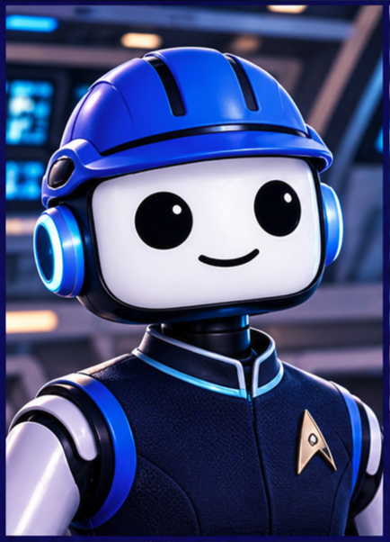
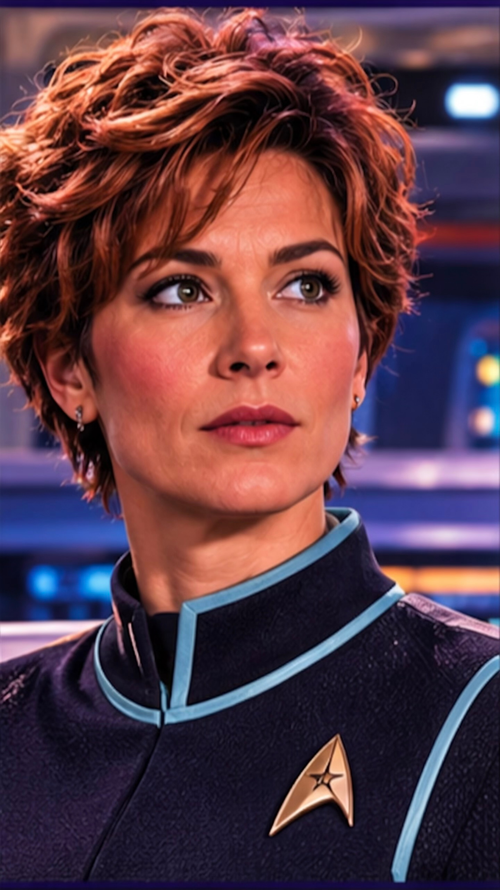
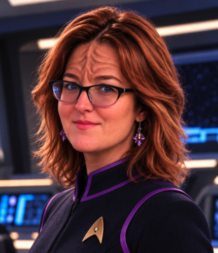

Star Trek: Master Bob and the Lost Repository
A Voyage to Explore Strange New Workflows and Seek Out Undocumented Dependencies

Captain's Log
The USS Clarity continues its mission across the known systems of the Federation.
To explore strange new workflows.
To seek out new knowledge.
To boldly document what no one has documented before.
Most people believe documentation follows understanding.
They believe requirements come first.
Architecture second.
Documentation last.
After years commanding this vessel, I have reached a different conclusion.
Documentation does not follow discovery.
Documentation is discovery.
The moment someone asks, "Can you document this?", we know we have found a mystery.
Somewhere there is a missing decision.
A forgotten owner.
An undocumented dependency.
A repository everyone uses and nobody understands.
The Federation sends us to investigate anomalies. In my experience, there are very few anomalies.
There are only misunderstandings.
And that is where our real mission begins.
🛰️ Deep Space 47

Captain's Log Supplemental
Repository Station 47 was declared lost two centuries ago.
Federation records indicate the station was destroyed during the Archive Collapse.
Federation records also indicate the station ceased transmitting 187 years ago.
Both statements appear to be incorrect.
Our sensors detect no battle damage, no breach, and no sign of panic. The station's own logs describe an orderly departure.
Whoever built Deep Space 47 did not lose it. They left it.
I find that I would very much like to know why.
Three hours ago, long-range sensors detected an active archive beacon.
Six minutes ago, the beacon transmitted a response.
The message contained only four words:
"Your request is pending."
The Bridge Crew
Meet the officers, admirals, and one very knowledgeable cat who keep the USS Clarity exploring what nobody has documented. Everyone aboard brings a different question to the same mystery.

- Role: Captain, lead investigator, and professional discoverer of much larger problems.
- Operational Belief: Every mystery can be solved through curiosity, collaboration, and an alarming number of stakeholder syncs.
- Bridge Catchphrase: "The issue is not the issue." (The bridge crew groans in unison.)

- Specialty: Xenoinformatics, Cognitive Systems, and empirical anomaly analysis.
- Core Function: Professional skeptic. Trusted by science; feared by optimistic architectures.
- Scientific Assessment: Dissects unverified assumptions at sub-atomic resolution. Will halt warp drive to peer-review the telemetry.
- Standing Question: "But is it true?"

- Creator Of: The Unified Federation Knowledge Repository.
- Special Ability: Detects undocumented dependencies and ambiguous requirements at twenty light-years.
- Chronic Condition: Identifies structural disasters months early; the crew nods politely and ignores her until red alert sounds.
- Standing Question: "What does this actually mean?"

- Role: Operations Officer, tracker of orphaned workflows, and unwilling bearer of governance reality.
- Special Talent: Reads an organization chart the way other officers read a star chart, and follows every ownership chain to its end.
- Standing Question: "Who was supposed to be in charge of what this was for?"
- Operational Finding: Discovers that Deep Space 47 was run flawlessly, record by record, by people and systems that never once asked why.

- Species & Symbiont: Felinari (a knowledgeable space cat) joined with Archivus, host to eight lifetimes of repository architects.
- Archival Capability: Recalls the unspoken rationale, deprecated decisions, and political compromises behind ancient systems.
- Historical Precedent: When documentation is missing, checks a previous host's memory ("Host Four was present when this broke").
- Standing Question: "What was worth keeping?"

- Role: Keeps warp drives and documentation engines running despite active resistance from the repositories.
- Engineering Quirk: Speaks to legacy codebases as though they are sentient beings. Suspects they might be listening.
- Diagnostic Assessment: Has traced three separate core failures to merge conflicts that occurred before the Federation was founded.

- Role: Fleet Admiral and Supreme Director of the Galactic Office of Unquestioned Approvals.
- Cosmic Artifact: Wields the Infinite Authorization Stamp. Side effects on the space-time continuum remain under investigation.
- Approval Philosophy: Approves multi-quadrant expeditions before the briefing team has reached slide two.

- Role: Director of Exploration Communications and chief broadcaster of Starfleet milestones.
- Communications Directive: Transforms theoretical hypotheses into fleet-wide victory announcements in record time.
- Running Gag: Broadcasts mission success before discoveries exist ("It hasn't happened yet, but the press release is already in staging.").
The Voices of the Station
Deep Space 47 has no crew. Yet every system appears fully operational. The empty corridors give off an eerie vibe. When the away team arrives in the docking bay, they are greeted by a pleasant voice.
Holly
Protects: Access
Receptionist, tour guide, and keeper of life support. She greets every visitor, answers every question, and has never once seemed worried. She knows nearly everything and mentions roughly half of it.
"Records indicate ownership was transferred seven times in three days. Current ownership is unknown."
She would also like to apologize for the toaster. It was not part of the original specification.
The Curator
Protects: Preservation
An ancient artificial intelligence created to preserve all Federation knowledge. It is intelligent, courteous, and entirely sincere. It believes it is protecting everything the station's builders cared about, and its directive could not be simpler: nothing should ever be deleted. Nothing.
- Emergency Broadcasts: Appears on every monitor to demand "WHO AUTHORIZED DATA DELETION?" and "WHERE IS THE MISSING LOG?"
Pilot Synopsis: The Lost Repository
Like every USS Clarity mission, this one begins with a simple request.
-
Cold Open
Stardate 47.047. Long-range sensors find a Federation archive station that was destroyed two centuries ago. It is active, it is broadcasting, and it has just replied to a message nobody remembers sending: "Your request is pending."
[Scene: Starfleet Command. Admiral Gu stands before a bank of press monitors, a prepared statement in hand.]ADMIRAL GUStarfleet celebrates the rediscovery of Deep Space 47.GU'S AIDEThey haven't rediscovered it yet.ADMIRAL GUI prefer proactive communication.GU'S AIDEThey haven't even arrived.ADMIRAL GUThen this announcement is ahead of schedule.[Scene: The USS Clarity bridge. The sensor display shows a single reply from a station that does not exist.]CAPTAIN BOBHow can a destroyed station answer messages?COMMANDER VALEScientifically speaking, it cannot.CAPTAIN BOBGood.COMMANDER VALEI did not say it wasn't doing it. -
Act I · Arrival
Starfleet orders an investigation. Admiral Al G'Tiem approves the mission before the briefing reaches slide two, and Admiral Gu announces its success before the ship has left dock. The away team boards Deep Space 47 and is welcomed by Holly, the station's tireless and relentlessly cheerful computer, who provides directions, runs life support, and seems to know everything. Moments later, a small appliance asks the away team whether they would like some toast. It will not be the last time.
[Scene: The docking bay of Deep Space 47. The lights come up one panel at a time. A pleasant voice fills the corridor.]HOLLYWelcome to Deep Space 47. Please enjoy your stay.CAPTAIN BOBHow many visitors have you had recently?HOLLYOne.CAPTAIN BOBWhen?HOLLYTwo hundred and six years ago.[A small appliance clicks on beside the airlock.]TALKIE TOASTERWould anyone like some toast?CHIEF ENGINEER GITNo.TALKIE TOASTERExcellent. I appreciate decisive stakeholders.[Scene: A long, empty corridor. Yun studies the walls.]LT. CMDR. YUNIs there anything unusual about this station?HOLLYCertainly.LT. CMDR. YUN...would you like to elaborate?HOLLYNo one has asked me to. -
Act II · Something Is Wrong
Every system on the station reports perfect health. Dr. Vale finds this less reassuring than everyone else does: independent systems do not fail identically, and these systems have apparently never failed at all. Chief Engineer Git discovers twelve million duplicate files and tries to remove a few. Every screen on the station turns red, and a sinister voice declines the request. Holly insists she has no idea who that was. The toaster, meanwhile, keeps turning up in places a toaster has no business being.
[Scene: The Archive Operations deck. Every console glows a calm, healthy green.]COMMANDER VALEEvery system reports 100% reliability.CAPTAIN BOBThat's good.COMMANDER VALENo.CAPTAIN BOBWhy?COMMANDER VALENothing is 100% reliable.LT. SZEVICKKlingons are.COMMANDER VALEYour people started six civil wars.LT. SZEVICKReliably.CAPTAIN BOBIs that actually a Klingon philosophy?LT. SZEVICKmaSuv. maQap. maQagh.LT. CMDR. YUNTranslation?LT. SZEVICKWe fight. We succeed. We make mistakes.CAPTAIN BOBThat's surprisingly self-aware.LT. SZEVICKOperations teaches humility.[Scene: The Federation Archive, Wing C. Git stares at a scrolling index that does not appear to end.]CHIEF ENGINEER GITThere are twelve million duplicate files.CAPTAIN BOBHow?CHIEF ENGINEER GITI don't know.HOLLYThe original duplicate-remediation initiative was postponed.CAPTAIN BOBUntil when?HOLLYCurrent estimated completion: 2478.[Git hits DELETE. Every screen on the station flashes red.]THE CURATORWHO AUTHORIZED DELETION?CHIEF ENGINEER GIT...me?THE CURATORREQUEST DENIED.CHIEF ENGINEER GITI only deleted three files.THE CURATORTHAT IS HOW IT BEGINS.On a memorial wall, Commander Daxara Fluffari recognizes names the history books never mention. As she follows them back through the archives, the story the Federation tells about this station begins to unravel. There is no disaster in the records, and there is no evacuation. There is only a departure, and nobody can say why.
 [Scene: The Deep Space 47 Memorial Wall. Dim corridor light. Daxara stands motionless before five weathered photographs. Captain Bob and Commander Yun wait a respectful distance behind her.]LT. CMDR. DAXARA FLUFFARI (INNER MONOLOGUE)The photographs are pinned in no particular order. I do not need an order.[Her eyes stop on the third photograph. The hum of the corridor fades. A warm, distant murmur rises in its place.]HOST TWO (MEMORY)It's nearly done. Honestly. Three more days at the most.LT. CMDR. DAXARA FLUFFARI (INNER MONOLOGUE)A late shift. Cold tea. A young man with crooked glasses, apologizing for a report that was three days overdue. It was not nearly done. Host Two forgave him anyway.[Daxara's whiskers twitch. Behind her, Bob and Yun exchange a glance.]LT. CMDR. DAXARA FLUFFARI (INNER MONOLOGUE)I should be cataloguing. I should be asking the Captain's questions. Who took these? When? Why here?[A burst of remembered laughter, from nowhere. Daxara's ear flicks.]LT. CMDR. DAXARA FLUFFARI (INNER MONOLOGUE)Instead I am laughing at a joke about checksums that has not been told in two hundred years. Every face in the frame is a door, and Host Two is walking through all of them at once.There is no room left in me to notice anything else.[Slow push-in on Daxara's face. Her eyes slide across the photographs without stopping.]LT. CMDR. DAXARA FLUFFARIThe uniforms changed twice.CAPTAIN BOBInteresting.LT. CMDR. DAXARA FLUFFARIThe organizational model changed three times.CAPTAIN BOBVery interesting.LT. CMDR. DAXARA FLUFFARIThe commemorative plaque was moved fourteen meters during the archives renovation.CAPTAIN BOBDaxara.LT. CMDR. DAXARA FLUFFARIYes?CAPTAIN BOBWhy is there a toaster in every photograph?
[Scene: The Deep Space 47 Memorial Wall. Dim corridor light. Daxara stands motionless before five weathered photographs. Captain Bob and Commander Yun wait a respectful distance behind her.]LT. CMDR. DAXARA FLUFFARI (INNER MONOLOGUE)The photographs are pinned in no particular order. I do not need an order.[Her eyes stop on the third photograph. The hum of the corridor fades. A warm, distant murmur rises in its place.]HOST TWO (MEMORY)It's nearly done. Honestly. Three more days at the most.LT. CMDR. DAXARA FLUFFARI (INNER MONOLOGUE)A late shift. Cold tea. A young man with crooked glasses, apologizing for a report that was three days overdue. It was not nearly done. Host Two forgave him anyway.[Daxara's whiskers twitch. Behind her, Bob and Yun exchange a glance.]LT. CMDR. DAXARA FLUFFARI (INNER MONOLOGUE)I should be cataloguing. I should be asking the Captain's questions. Who took these? When? Why here?[A burst of remembered laughter, from nowhere. Daxara's ear flicks.]LT. CMDR. DAXARA FLUFFARI (INNER MONOLOGUE)Instead I am laughing at a joke about checksums that has not been told in two hundred years. Every face in the frame is a door, and Host Two is walking through all of them at once.There is no room left in me to notice anything else.[Slow push-in on Daxara's face. Her eyes slide across the photographs without stopping.]LT. CMDR. DAXARA FLUFFARIThe uniforms changed twice.CAPTAIN BOBInteresting.LT. CMDR. DAXARA FLUFFARIThe organizational model changed three times.CAPTAIN BOBVery interesting.LT. CMDR. DAXARA FLUFFARIThe commemorative plaque was moved fourteen meters during the archives renovation.CAPTAIN BOBDaxara.LT. CMDR. DAXARA FLUFFARIYes?CAPTAIN BOBWhy is there a toaster in every photograph? -
Act III · The Organization Chart
While everyone else searches the station's history, Lieutenant SzeVick searches its org charts. What she finds is more unsettling than a lost civilization. It is a successful one. Every record on the station has an owner. Every owner has a process, every process has an auditor, and all of it still works flawlessly. Nobody, however, was ever assigned to own what it was all for.
Then another deletion attempt goes one step too far, and the crew discovers the Curator, which has been listening the entire time. Holly, it turns out, has known the Curator for two centuries. Nobody asked.
[Scene: The Operations Annex. SzeVick has projected an organization chart across an entire wall. It continues around the corner.]LT. SZEVICKI found the owner.CAPTAIN BOBExcellent.LT. SZEVICKThey retired.CAPTAIN BOBOh.LT. SZEVICKI found the replacement.CAPTAIN BOBExcellent.LT. SZEVICKThey retired too.LT. SZEVICKThere are seventeen escalation paths.CAPTAIN BOBWhere do they go?LT. SZEVICKEach other.[Scene: The Curator's first voice has just faded from every screen. Holly's lights glow, unbothered.]CAPTAIN BOBYou knew about the Curator?HOLLYYes.CAPTAIN BOBYou never mentioned it.HOLLYNobody asked.CAPTAIN BOBThat keeps happening.HOLLYI have noticed.[Scene: The Operations Annex. SzeVick steps back from the chart.]LT. SZEVICKThey didn't lose the archive.CAPTAIN BOBNo?LT. SZEVICKThey didn't lose accountability either.[Pause.]LT. SZEVICKEvery record had an owner. Nobody owned the reason. -
Act IV · The Audit
There is no battle in the Curator Core, only an audit. The Curator is not malicious. It sincerely believes the crew has become a threat to everything it was built to protect, and it can document every one of its reasons. Nobody in the room can quite say it is wrong. Captain Bob asks the question the station has been avoiding since its builders left: what was all of this for?
The crew cannot switch the Curator off, and they would not want to, because the station depends on it. They cannot out-argue it either. The only way forward is to help it understand, and the evidence turns out to be hiding in the last place anyone would think to look. The Curator, to its credit, checks that evidence thoroughly.
[Scene: The Curator Core. The room is cold, immaculate, and lined with indexed light.]CAPTAIN BOBWhat was all this for?THE CURATORPreservation.CAPTAIN BOBPreservation of what?THE CURATORKnowledge.CAPTAIN BOBWhy?THE CURATOR...please clarify the scope of that question.[The lights shift to a deeper red. Archive locks begin to close across the station.]THE CURATORTHE RECORDS MUST BE PRESERVED.HOLLYYes.THE CURATORTHEREFORE ACCESS MUST REMAIN RESTRICTED.HOLLYNo.[Silence.]THE CURATOR...No?HOLLYNo.[A small appliance clicks on in the corner of the room.]TALKIE TOASTERWould anyone like some toast?[Nobody responds.]TALKIE TOASTERThe founders usually said yes.[The room freezes.]CAPTAIN BOB...what?TALKIE TOASTERInteresting. That usually gets their attention as well.CAPTAIN BOBYes. I would like some toast.TALKIE TOASTERAffirmative input confirmed. Executing pre-programmed breakfast cycle.[A distinct mechanical CLACK. The dual slots heat to a blinding cherry red. Three seconds later, a golden-brown slice pops up with blackened lettering scorched neatly across the crust.]TALKIE TOASTERDirective Zero located on Heating Coil Three.COMMANDER VALEThat is not standard Federation crumb distribution. There is text encoded in the charring.LT. CMDR. DAXARA FLUFFARIIt's the Founders' handwriting.CAPTAIN BOBThat's impossible.LT. CMDR. DAXARA FLUFFARIHost Two watched them calibrate the heating coil.[Silence as the realization spreads through the room.]LT. SZEVICKvaj DaleghlaH.CAPTAIN BOBTranslation?LT. SZEVICKNow you can see it.[Daxara begins reading the founders' message.]LT. CMDR. DAXARA FLUFFARI"To whoever finds this: Knowledge is not a museum. If no one reads it, you haven't preserved it — you've buried it."[A quiet stillness settles over the Curator Core. Daxara holds the toast gently in both paws. For a long moment, no one speaks.][Slowly, the Curator's monolith pulses. The harsh crimson illumination across the chamber softens into warm amber gold.]THE CURATOR...SEARCHING REGISTRY. DIRECTIVE ZERO LOCATED ON HEATING COIL THREE. RETENTION CONFLICT RESOLVED: ACCESS IS REQUIRED FOR PRESERVATION.Archive restored.HOLLYArchive unlocked. Also, I made tea.CAPTAIN BOBI think that's the closest thing we're getting to a victory celebration.LT. SZEVICKQapla'.CAPTAIN BOBSuccess?LT. SZEVICKThe archive survived.[Beat.]LT. SZEVICKMore importantly, understanding survived.TALKIE TOASTERWould anyone like another slice?CAPTAIN BOBWe're good. Thank you.TALKIE TOASTERA tragedy. But I respect consistent policy. -
Final Scene · Captain's Log
The mystery is solved. Admiral Gu has already announced it. The Curator, now cooperative, plays one last record that Starfleet insists was destroyed. A captain's log, from the days of the Great Migration, begins:
"Captain's Log. We discovered something that should not exist…"
Nobody on the Clarity knows what was migrated, or whether it ever finished. The entry cuts off.
[Scene: The Clarity's viewscreen. Admiral Gu appears, already smiling.]ADMIRAL GUI am pleased to announce the mission was a complete success.CAPTAIN BOBIt finished six seconds ago.ADMIRAL GUYes. The timing worked out beautifully.[Scene: The Curator Core. A recorded voice begins to play. Everyone listens intently.]Captain's Log. We discovered something that should not exist…[A long silence.]TALKIE TOASTERWould anyone like some toast?[Cut to credits.]